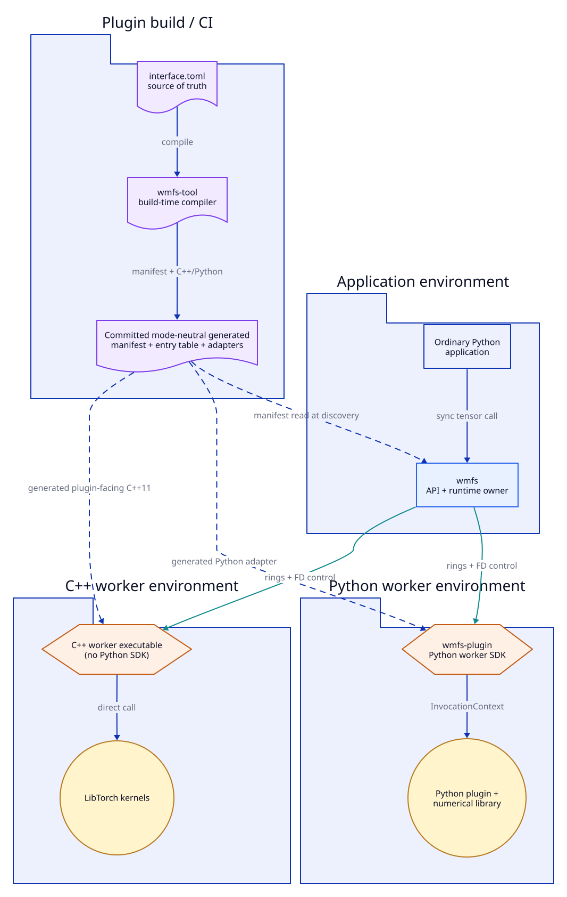
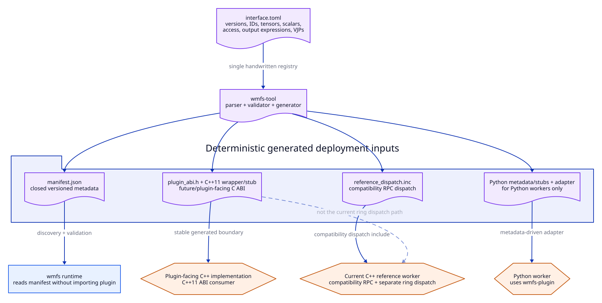
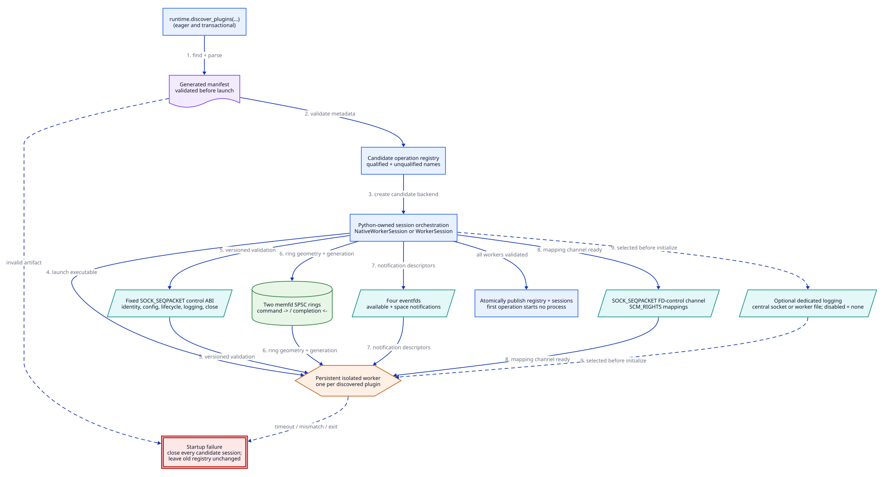
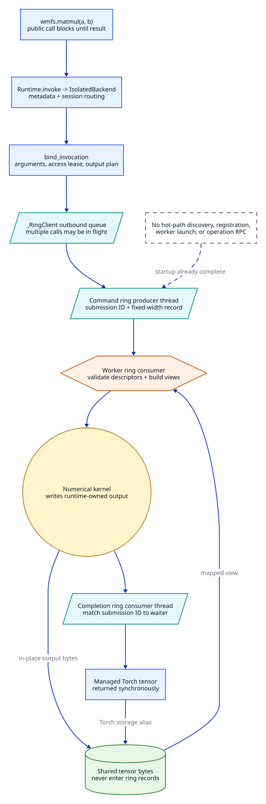
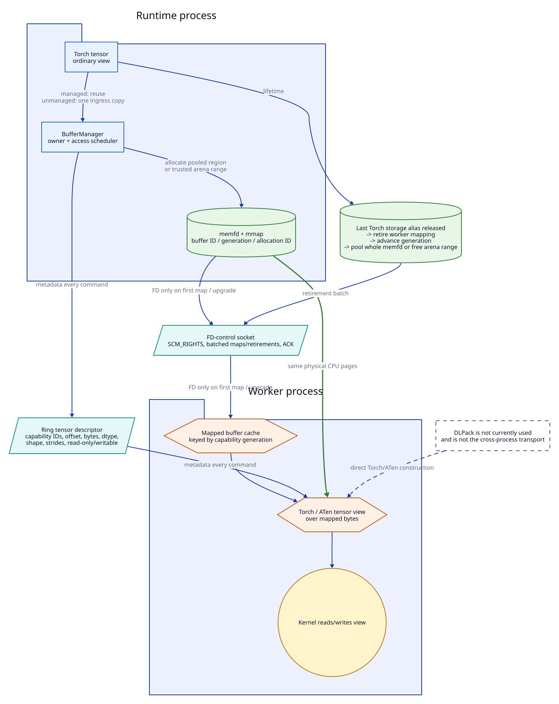
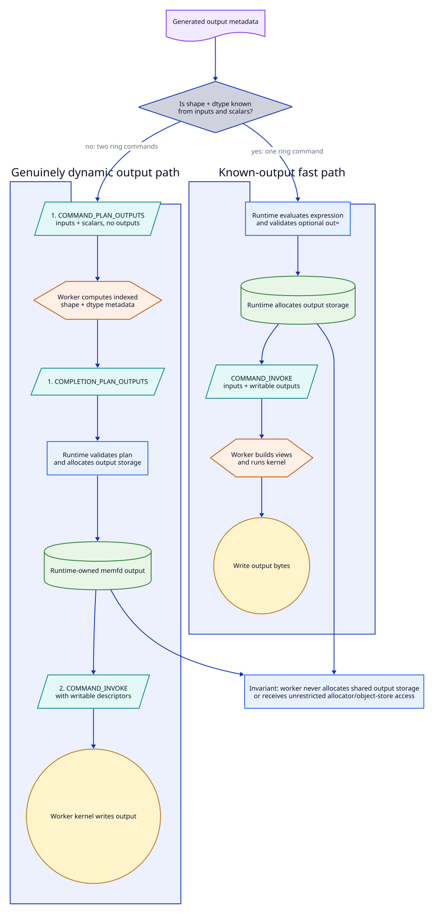
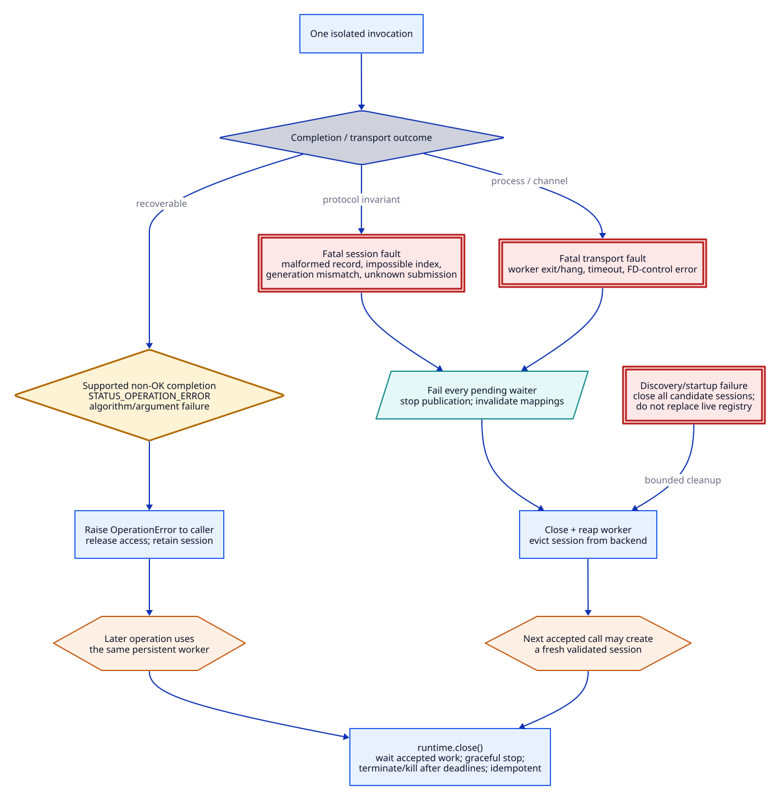
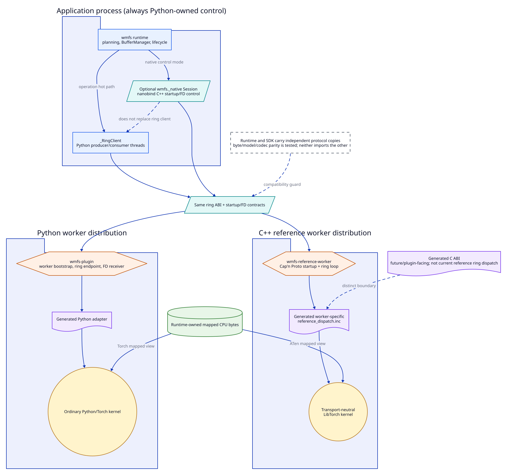

Architecture Overview¶
WMFS lets application code make ordinary synchronous Python tensor calls while the runtime may execute the kernel in a persistent, ABI-isolated worker. The runtime owns discovery, planning, process lifecycle, rings, capabilities, and shared CPU storage. Plugins own typed interfaces and numerical kernels.
The diagrams use both shape and labels, not color alone. Blue rectangles are application-runtime components; orange hexagons are isolated workers; purple documents are generated or declarative artifacts; teal parallelograms are transport channels; green cylinders are shared memory; gold circles are compute; red double-bordered boxes are fatal session failures; and amber diamonds are recoverable operation failures. Dashed lines denote build-time, optional, or explicitly non-hot-path relationships.
Recommended Reading Order¶
Public API: read Getting Started, then the hot-path diagram below to establish that calls are synchronous while dispatch is internally asynchronous.
Packages and generation: read the package-role and interface-generation diagrams, then Package Roles and Plugin Artifact Compatibility.
Discovery and startup: read the startup diagram before tracing
Runtime.discover_pluginsand session construction.Rings: read the hot-path diagram, then the normative Command and Completion Ring Protocol.
Buffers and FDs: read the tensor-transport diagram before the detailed Data Flow guide.
Workers and outputs: compare worker boundaries, then known and dynamic output allocation.
Failures: read failure/recovery before changing transport validation, deadlines, or worker lifecycle.
Evidence: finish with
wmfs.benchmark,benchmarks/README.md, and the integration, Python-worker interoperability, and C++ protocol tests linked below.
1. Package Roles¶
{kind=link}

WMFS distributions belong to separate build and runtime environments; they are not a dependency stack installed everywhere.¶
The application installs wmfs. Only a Python worker installs wmfs-plugin.
Plugin build and CI environments run wmfs-tool, then package its deterministic
outputs with a worker. The runtime does not import plugin implementations, and a
C++ worker has no dependency on either Python package used by plugin authors.
Key invariants and nuances
wmfs,wmfs-plugin, andwmfs-toolhave deliberately one-way, disjoint dependency roles.Every Python plugin uses the SDK facade. It is not a dependency of the main runtime or C++ workers.
Runtime and worker environments may use different Python, Torch, libc, and toolchain versions.
Read the implementation
pyproject.toml: application runtime package configuration at the repository root.packages/wmfs-plugin/pyproject.toml: independent Python plugin SDK dependencies.packages/wmfs-tool/pyproject.toml: independent interface compiler dependencies.plugins/reference/pyproject.toml: ordinary reference kernels and generated plugin artifacts.plugins/reference/wmfs_reference/plugin.py: shared bundled/isolated Python plugin binding.nix/packages.nix: separately deployable package graph.
2. Interface Generation¶
{kind=link}

One declarative plugin interface drives runtime metadata and plugin-facing artifacts.¶
interface.toml declares operation IDs, parameters, access, output expressions,
VJPs, lifecycle hooks, and a typed configuration schema. wmfs-tool validates
it and emits committed deployment artifacts. The runtime reads the manifest
without running the tool or importing plugin code.
Key invariants and nuances
The interface definition is the only handwritten operation registry.
Generated artifacts have explicit format, ABI, protocol, generator, and fingerprint fields; old supported artifacts remain deployment inputs.
One generated C++11 plugin entry table is linked into both the bundled adapter and isolated worker; the transport loop is generic mode-specific glue around the same operation catalog and kernels.
Read the implementation
plugins/reference/interface.toml: reference plugin source of truth.wmfs_tool/generator.py: deterministic output set, fingerprints, ABI, and adapters.plugins/reference/generated/manifest.json: runtime deployment metadata.plugins/reference/generated/src/reference_plugin_stub.cpp: mode-neutral generated plugin entry table and typed dispatch.tests/integration/test_generated_v1_compatibility.py: old generated artifact compatibility.
3. Eager Startup¶
{kind=link}

Discovery validates and starts every candidate worker before publishing a new operation catalog.¶
Manifest loading, schema introspection, and configuration are worker-free.
Discovery is eager and transactional: one persistent worker per plugin starts
during discover_plugins, not on the first operation. The fixed control ABI
carries startup identity and environment, canonical configuration, lifecycle
acceptance, logging selection, and exact ring/event/FD/log descriptor roles over
SOCK_SEQPACKET with SCM_RIGHTS. Operation traffic uses the rings after
startup.
Key invariants and nuances
A candidate registry is published only after all workers validate.
Failed discovery closes all sessions created by that attempt and leaves the prior registry intact.
Startup establishes two SPSC rings, four eventfds, an FD-control socket, a session generation, an optional independent log service, and bounded deadlines.
Disabled logging establishes no log socket or queue; bundled mode establish none of the isolated transport resources.
Read the implementation
Runtime.discover_plugins: candidate discovery, publication, and previous-backend cleanup.IsolatedBackend.discover: eager session creation per manifest.WorkerSession._serve: Python-orchestrated startup followed by mandatory native transport.control.py: fixed startup, lifecycle, and FD-control codec.
4. Steady-State Hot Path¶
{kind=link}

The public call is synchronous; private producer and consumer machinery permits multiple submissions to be in flight.¶
The caller blocks for its tensor result, but the native session assigns submission IDs, publishes commands, and independently consumes completions. The command and completion rings run in opposite directions. Numerical bytes remain in shared pages; records contain bounded fixed-width descriptors and scalar metadata.
Key invariants and nuances
No public future, command, ring, worker, or shared-memory handle leaks into the ordinary API.
Discovery, registration, and worker launch happen before this path. Control messages are not used for normal operation calls.
Full rings apply bounded backpressure and eventfd waits; they never overwrite unread records or busy-spin without bound.
Read the implementation
wmfs.__getattr__: generation-bound dynamic operation publication.Runtime.invoke_registered: synchronous public dispatch and lifecycle accounting.bind_invocation: transport-neutral argument, access, and output planning.src/native_session.cpp: producer, completion dispatcher, pending waiters, deadlines, and profiling boundaries.src/ring.cpp: native SPSC publication and eventfd waits.
5. Tensor and FD Transport¶
{kind=link}

FD transfer establishes mappings; ring descriptors select validated tensor views over the same CPU pages.¶
The runtime creates and owns memfd storage. It sends duplicate descriptors in
batched SCM_RIGHTS control messages only when a worker lacks the required
mapping or needs a writable upgrade. Every operation still carries capability
and view metadata in its ring record. A managed tensor can cross repeated calls
without copying; an unmanaged CPU tensor incurs one ingress copy.
Key invariants and nuances
Numerical payload bytes never enter control frames or ring records.
Read-only input access is the default; writable mappings and access leases are explicit. Pooled mode preserves per-buffer capabilities, while trusted arena mode deliberately exposes one persistent writable mapping.
Reuse waits for the last Torch storage alias and worker retirement, then advances the pooled buffer generation. DLPack is not currently used and is not the cross-process transport.
Read the implementation
BufferManager: allocation, access leases, aliases, pooling, arena mode, and reclamation.src/native_session.cpp: runtime-side batched map and retirement protocol.FdReceiver: Python worker mapped-buffer endpoint.MappedBufferCache: C++ worker mapping validation, ATen view construction, and lifetime.control.h: fixed transactional mapping descriptors and acknowledgements, not tensor payload serialization.
6. Output Allocation¶
{kind=link}

Known outputs use one ring command; genuinely dynamic outputs use two ring commands while ownership remains with the runtime.¶
For known shape and dtype expressions, the runtime evaluates metadata and
preallocates outputs before COMMAND_INVOKE. Dynamic operations first issue
COMMAND_PLAN_OUTPUTS; the worker returns only indexed shape and dtype metadata.
After validation, the runtime allocates and maps storage, then sends the ordinary
invoke command with writable descriptors.
Key invariants and nuances
Dynamic allocation means two ring commands, not worker-owned allocation and not a control RPC.
The worker receives only operation-scoped input and output capabilities; it does not receive a general allocator or object store.
Invalid dynamic plans are fatal transport failures because trusting them would violate runtime ownership and descriptor bounds.
Read the implementation
output_metadata.py: known shape and dtype expression evaluation.plan_outputs: runtime validation and reusableout=handling.WorkerSession._plan_dynamic_outputs: native ring dynamic planning command orchestration.run_ring: C++ planning and invocation command handling.
7. Failure and Recovery¶
{kind=link}

Algorithm failures are operation results; corruption and transport failures are session failures.¶
A supported STATUS_OPERATION_ERROR becomes OperationError and leaves the
session usable. Malformed records, impossible sequence state, generation or
submission mismatches, worker exit, deadline expiry, and FD-control failures
invalidate the transport. Pending callers fail, the backend evicts and closes
the session, and a later invocation may create a fresh validated worker.
Key invariants and nuances
Readers never skip malformed records to attempt resynchronization.
Access leases and invocation-scoped writable mappings are released or invalidated on every path; failed pooled retirements quarantine regions.
Shutdown is bounded: graceful close is followed by terminate/kill deadlines, and repeated close calls are safe.
Read the implementation
transport/errors.py: operation versus worker-transport exception types.Session::Impl::fail_ring: one fatal error propagated to all pending submissions.IsolatedBackend._evict_session: failed-session eviction and cleanup.BufferManager._release_pooled_many: worker retirement and quarantine after failure.test_failure_boundaries.py: recoverable errors, hostile workers, deadlines, FD failures, and reaping.
8. Python and C++ Worker Boundaries¶
{kind=link}

Python and C++ workers share wire behavior but intentionally have different packaging and adapter boundaries.¶
Python orchestrates worker startup, but isolated steady-state transport requires
the nanobind wmfs._native.Session for lifecycle, FD control, command
publication, and completion dispatch. There is no host-side Python transport
fallback. A Python worker uses the standalone SDK and generated Python adapter
as the peer endpoint. The current C++ reference
worker owns the ring loop and invokes the same generated plugin entry table used
by the bundled build before calling transport-neutral LibTorch kernels.
Key invariants and nuances
wmfs-pluginnever importswmfs, and the runtime never imports the SDK.Their independently packaged control codecs, metadata models, ring constants, and codecs are parity-tested.
Generated plugin-facing C/C++11 declarations are the stable source boundary; only process transport glue differs by execution mode. CI compiles that generated scope, including lifecycle/config/log declarations, with GCC 4.8.5.
Read the implementation
worker_process.py: startup/process orchestration around the mandatory native client.src/native_session.cpp: nanobind session’s fixed lifecycle, FD-control, and ring-dispatch implementation.wmfs_plugin/worker.py: Python worker bootstrap and ring dispatch.src/reference_worker.cpp: C++ reference startup server and ring consumer.src/reference_kernels.cpp: transport-neutral native numerical kernels.test_protocol_parity.py: independent runtime/SDK protocol-copy parity.
Benchmarks and Cross-Boundary Tests¶
The architecture is measured rather than inferred. wmfs-benchmark separates
bundled Python/native and isolated initialization, fixed startup/control ping, logging-mode
initialization, ring enqueue and wakeups,
backpressure, first-use FD transfer and mapping, cached mappings, output
allocation, known/dynamic output paths, direct/profiled calls, worker view
construction, kernel time, result materialization, and reclamation. It compares
bundled Python, bundled native, and isolated execution using equivalent kernels.
Read the implementation
benchmark.py: measurement boundaries, report schema and bundled/isolated comparisons.benchmarks/README.md: reproducible benchmark workflow and checked reports.tests/integration/test_benchmark.py: required measurement groups and report validation.tests/integration/test_tensor_transport.py: process-level shared tensor behavior.tests/integration/test_native_session.py: native control boundary.tests/cpp/ring_protocol_test.cppandtests/cpp/ring_test.cpp: native ABI and SPSC invariants.